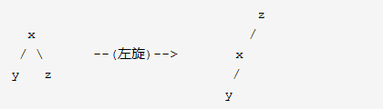

容器源码
题容器源码
温馨提醒：idea的进入源码只要点击鼠标滑轮，返回上级只要输入Ctrl+alt+←
ArrayList：
- 底层数据结构：数组
1 | public ArrayList() { |
Add方法：（面试可以秀一下grow过程）
- 第一次新增元素，minCapacity=size+1=0+1=1（size初始为0）
1 | public boolean add(E e) { |
- 点击ensureCapacityInternal再往底层
- （elementData、DEFAULTCAPACITY_EMPTY_ELEMENTDATA是一个对象数组，初始为空）
- DEFAULT_CAPACITY初始为10，可以说是初始容量，（但不是在这里决定的
1 | private void ensureCapacityInternal(int minCapacity) { |
- 在进入ensureExplicitCapacity方法里查看
- modCount初始为0，并且被transient修饰，保证不参与序列化和反序列化。是一个计数器，记录ArrayList进行add和remove的次数。
1 | private void ensureExplicitCapacity(int minCapacity) { |
- ArrayList扩容
- oldCapacity代表原来数组长度：旧的数组长度
- newCapacity代表新生成的数组长度：旧的数组长度+旧的数组长度右移一位
- MAX_ARRAY_SIZE：Integer的最大长度-8（减去8是因为jvm运行需要一些头字，大小为8）
1 | private void grow(int minCapacity) { |
- 进入hugeCapacity源码继续查看
1 | private static int hugeCapacity(int minCapacity) { |
- 最后使用copyOf，将旧数组的值赋值给新数组
1 | elementData = Arrays.copyOf(elementData, newCapacity); |
- 最后再返回add方法里，将索引挪到下一位，然后把元素添加进去
1 | elementData[size++] = e; |
Get方法：
- get方法进入
1 | public E get(int index) { |
- 进入rangeCheck方法
1 | private void rangeCheck(int index) { |
- 进入elementData方法
- 这里面的E就是T，泛型
1 | E elementData(int index) { |
Remove方法：(面试可以秀一下arraycopy过程)
- remove方法是通过元素移动来实现的，先提取出要移动的元素，然后进行移动，最后将其值赋为空，jvm会帮我们自动处理数组内值为null的元素。
1 | public E remove(int index) { //默认数组为{a1,a2,a3,a4,a5} |
- rangeCheck：检查索引是否超过数组范围
1 | private void rangeCheck(int index) { |
- System.arraycopy：是一个本地方法，下面方法运行过程
- 默认数组为{a1,a2,a3,a4,a5},删除了a3，此时numMoved=2，要移动2个元素。
- 第一个传入数组是原数组，从index+1（a4）开始复制numMoved位（2位）带第二个elementData的第三个位置中（原本a3位置）
- 最终得到的数组是{a1,a2,a4,a5,a5}
1 | public static native void arraycopy(Object src, int srcPos,Object dest, int destPos,int length); |
- 最终将最后一个元素赋值为null，让JVM的GC帮我们处理空值，结果为{a1,a2,a4,a5}
1 | elementData[--size] = null; // clear to let GC do its work |
LinkedList
底层数据结构：双向链表（每个队列都有独立的前置结点指针+后置结点指针+元素）
1 | private static class Node<E> { |
单向链表：只有next，作为后置结点指针，指向下个结点。
双向链表：next和prev都有，一个指针指向后置结点，另一个指向前置结点。

Add方法：
- 将传入元素传递给linkLast方法：
1 | public boolean add(E e) { |
- 进入linkLast方法：
- node是什么，前面刚开始介绍了。
- last也是一个Node类，初始值为空，表示上个结点：transient Node
last; - fist也是一个Node类，初始值为空，表示第一个结点：transient Node
first;
1 | void linkLast(E e) { |
第一个元素插入：

往后的元素插入：
Get方法
- 进入方法内部，主要先判断长度有没有越界，没有就取值出来。
1 | public E get(int index) { |
- 进入checkElementIndex方法内部：判断传入的index是否超过固有长度。
1 | private void checkElementIndex(int index) { |
- 再进入isElementIndex：发现是拿add方法中的size和index。
1 | private boolean isElementIndex(int index) { |
Remove方法：
- 进入方法内部，和get方法一样先判断是否越界，这里不再赘述。
1 | public E remove(int index) { |
- 进入node方法，查看取出结点过程。
- index < (size >> 1)：判断索引是大于还是小于长度的一半。
- 大于就从头遍历,找到目标结点的上一个结点的后置节点指针，根据指针得到对应结点。
- 小于就从尾遍历,找到目标结点的下一个结点的前置节点指针，根据指针得到对应结点。
- index < (size >> 1)：判断索引是大于还是小于长度的一半。
1 | Node<E> node(int index) { |
- 进入unlink方法：有点多，但是不要怕，看注释，一步步都写好了。
1 | E unlink(Node<E> x) { |
Hashmap
底层数据结构：JDK1.7散列表（数组+链表），JDK1.8数组+链表/红黑树，这里我详细给大家介绍一下，当然想了解树的演变过程可以看我的下一篇文章。下面，先开始讲数据结构：
底层数据结构
散列表
先带大家认识下散列表，散列表就是数组+链表：
- 当数据进入时，会先拿到该元素的hash值给到数组，然后再有相同的hash值的数据进入到数组中的话，就会进行哈希碰撞，碰撞有两个方法（拉链法和开放定址法）。
- 拉链法：当一个元素存储进散列表的时候，会先计算哈希值，然后放到数组里。遇到下一个放进来的元素和它的哈希值相同，就放到相同的链表里。
- 开放定址法：当一个元素存储进散列表的时候，会先计算哈希值，然后放到数组里。遇到下一个放进来的元素和它的哈希值相同，就放到这个元素的下一个数组里(所以这个方法和底下这个图不匹配，不用看了)。

红黑树
hashmap无非就是数组+链表（JDK1.7）或者数组+链表/红黑树（JDK1.8)散列表已经说完了，下面讲一讲红黑树，可能入门有点难度，如果看不懂的话，可以先看我的文章《树的演变》：
首先红黑树先记下来五个特点：
- 每个节点或者是黑色，或者是红色。
- 根节点是黑色。
- 每个叶子节点（NIL）是黑色。 [注意：这里叶子节点，是指为空(NIL或NULL)的叶子节点！]
- 如果一个节点是红色的，则它的子节点必须是黑色的。
- 从一个节点到该节点的子孙节点的所有路径上包含相同数目的黑节点。
注意：
特性(3)中的叶子节点，是只为空(NIL或null)的节点。
特性(5)，确保没有一条路径会比其他路径长出俩倍。因而，红黑树是相对是接近平衡的二叉树。
这里解释下什么是 nil、Nil、NULL、NSNull （不区分大小写）：
1 | nil：指向一个对象的空指针,对objective c id 对象赋空值. |
以下是对应五个特点画出来的红黑树图：画的不好看，见谅。。。

任何用来存储的数据结构，最主要的还是添加、删除。在对红黑树进行添加或删除之后，都会用到旋转方法。为什么呢？道理很简单，添加或删除红黑树中的节点之后，红黑树就发生了变化，可能不满足红黑树的5条性质，也就不再是一颗红黑树了，而是一颗普通的树。而通过旋转，可以使这颗树重新成为红黑树。简单点说，旋转的目的是让树保持红黑树的特性。
旋转包括两种：左旋 和 右旋。下面分别对它们进行介绍。
左旋
步骤如下：（左旋左子树，改变左子树，并变成左子树）
- 先将Y的｛左｝子树给X。
- 将X父亲给Y ，这时候有三种情况，如图所示。
- 最后完成了左旋。

右旋
步骤如下：（右旋,改变右子树，并变成右子树）
- 先将X的｛右｝子树给Y。
- 将Y父亲给X ，这时候有三种情况，如图所示。
- 最后完成了右旋。

足够细心的话会发现，左右旋是对称的，即左旋以后再右旋就能回到原本的样子。
左旋就提旋转目标的右子树上去，使自身变成右子树。
右旋就提旋转目标的左子树上去，使自身变成左子树。
举例：以下都以X为旋转目标：


这一块想看代码可以看我的《树的演变》一章，里面会详细告诉大家，树的相关操作的所有代码。
添加
在讲添加时，我们先讲一下，插入元素应该要做的事：
第一步: 将红黑树当作一颗二叉查找树，将节点插入。
红黑树本身就是一颗二叉查找树，将节点插入后，该树仍然是一颗二叉查找树。也就意味着，树的键值仍然是有序的。此外，无论是左旋还是右旋，若旋转之前这棵树是二叉查找树，旋转之后它一定还是二叉查找树。这也就意味着，任何的旋转和重新着色操作，都不会改变它仍然是一颗二叉查找树的事实。
好吧？那接下来，我们就来想方设法的旋转以及重新着色，使这颗树重新成为红黑树！
第二步：将插入的节点着色为”红色”。
为什么着色成红色，而不是黑色呢？为什么呢？在回答之前，我们需要重新温习一下红黑树的特性：
(1) 每个节点或者是黑色，或者是红色。
(2) 根节点是黑色。
(3) 每个叶子节点是黑色。 [注意：这里叶子节点，是指为空的叶子节点！]
(4) 如果一个节点是红色的，则它的子节点必须是黑色的。
(5) 从一个节点到该节点的子孙节点的所有路径上包含相同数目的黑节点。
将插入的节点着色为红色，不会违背”特性(5)”！少违背一条特性，就意味着我们需要处理的情况越少。接下来，就要努力的让这棵树满足其它性质即可；满足了的话，它就又是一颗红黑树了。o(∩∩)o…哈哈
第三步: 通过一系列的旋转或着色等操作，使之重新成为一颗红黑树。
第二步中，将插入节点着色为”红色”之后，不会违背”特性(5)”。那它到底会违背哪些特性呢？
对于”特性(1)”，显然不会违背了。因为我们已经将它涂成红色了。
对于”特性(2)”，显然也不会违背。在第一步中，我们是将红黑树当作二叉查找树，然后执行的插入操作。而根据二叉查找数的特点，插入操作不会改变根节点。所以，根节点仍然是黑色。
对于”特性(3)”，显然不会违背了。这里的叶子节点是指的空叶子节点，插入非空节点并不会对它们造成影响。
对于”特性(4)”，是有可能违背的！
那接下来，想办法使之”满足特性(4)”，就可以将树重新构造成红黑树了。
下去这部分可能有点难度，大家跟好车，先看一下这部分伪代码，这里我们是要插入z，然后在节点Y下插入的，我将插入数据分为两步，插入和染色：
插入：这里是假设存在Y这个节点，然后分为三种情况
- Y是空节点，则插入的Z就变成了唯一节点，即根
- Z<Y，把Z设为左孩子。
- Z>Y，把Z设为右孩子。
最后进行插入节点的左右孩子设空，还有插入节点着色，这部分相对简单，就不给图了。
1 | RB-INSERT(T, z) |
- 染色：分为三种情况
- 如果插入的元素是根节点，那么直接插入然后染色黑色。
- 插入节点的父节点是黑色，因为我们插入的是红色，满足5个特性，所以不需要染色。
- 被插入的节点的父节点是红色。，因为和特性不符，所以分为以下三种情况处理：
1 | RB-INSERT-FIXUP(T, z) |
三种情况图解：
- 父节点是红色，叔叔节点（父节点的兄弟节点）是红色的，下图是左右孩子。
- 将父节点和叔叔节点染成黑色，祖父节点染成红色即可。

- 父节点是红色，叔叔节点是黑色，添加的节点是父节点的左孩子。
- 先将父节点染成黑色；
- 将祖父节点染成红色；
- 将父节点进行右旋；

- 父节点是红色，叔叔节点是黑色，添加的节点是父节点的右孩子。
- 先将父节点左旋
- 先将子节点染色
- 将祖父节点染色
- 把祖父节点右旋

至此，添加操作完成了，当然最难的还不是添加操作，而是删除操作，因为删除操作不仅得满足五点原则，还得满足平衡二叉树。
删除
这边粗略先介绍下二叉树节点删除思路，如果需要看更详细内容，可以看我下一篇文章《树的演变》。
二叉树节点删除的思路
- 如果要删除的节点正好是叶子节点，直接删除即可；
- 如果要删除的节点还有子节点，就需要建立父节点和子节点的关系：
- 如果只有左孩子或者右孩子，直接把这个孩子上移放到要删除的位置就好了；
- 如果有两个孩子，就需要选一个合适的孩子节点作为新的根节点，该节点称为 继承节点。（新节点要求比所有左子树要大、比右子树要小，我们可以选择左子树中的最大节点，或者选择右子树中的最小的节点。）
红黑树节点删除的思路
我们需要在二叉树删除的思路上，再考虑对删除完后的树进行调整。 二叉树的平衡分为两打点或三个小点，而二叉树还要再去进行相应调整，这样对我们来说工作量太大了，所以我们将这些东西合并在一起来讲述。
先进行二叉树的删除，分为三种情况：
- 如果删除节点没有孩子，则说明是叶子，直接删除即可。（步骤A）
- 如果删除的节点只有一个孩子，则用这个唯一的儿子去代替它即可。（步骤B）
- 如果删除的节点有两个孩子，则要进行两步处理：
- 如果有两个孩子，就需要选一个合适的孩子节点作为新的根节点，该节点称为继承节点。 选择孩子节点中，左子树中的最大节点（左树最右），或者选择右子树中的最小的节点（右树最左），成为继承节点。
- 然后再将选择的继承节点的孩子节点重复步骤A或步骤B即可。（不用考虑两个孩子的情况，因为如果有孩子就不可能是子树最左或者最右）。
如下图所示，删除的是80这个元素，如果你能推出可以成为继承节点的是75或者90，就说明可以了。（忽略颜色）

因为染色需要对比五个性质是否被改变，所以这里提一嘴五个性质：
1 | * 每个节点或者是黑色，或者是红色。 |
染色(DelFixUp)：染色或者叫做调整，大体分为两种情况：
- 删除红色节点，不会破坏红黑树原有性质，所以只要把要调整上的节点赋值给删除的节点，然后删除原有节点即可。这里我们删除40作为尝试，会发现35上位后，仅删除了原有的35。
删除黑色节点，这里分为四部分：因为删除黑色节点会破坏红黑树的五大性质
- 兄弟节点是黑色，且其子节点都是黑色：将兄弟节点染色（这样只解决了当前部分的五个性质），然后把目标节点的父亲节点当成新的目标节点递归，直到x为红色时或者x为根节点时退出，退出时，再将X变为黑色。

- 兄弟节点是黑色，其右子结点为红色:
- 纠错：（1、将X兄弟节点W染色成和父亲节点一个颜色—->1、将W进行染红色处理）

- 兄弟节点是黑色，其子节点左红右黑

- 兄弟节点是是红色

至此，红黑树的数据结构介绍完毕，我们可以开始讲Hashmap，这部分有点长，我在想要不要单独抽取出来放在数据结构中。。。（这边纯手打的，图也是我自己画的，引用的时候麻烦给上个名字，求求了，呜呜呜~~~）
术语
这里说一下桶，网上大部分博客意见不一，有的把数组叫做桶，有的把整个数组和链表叫做桶，个人拙见，桶应该是单个数组对应的链表称之为桶：
- 桶：就是这一条，看图，是一个数组里的元素和对应的一条链表，两个合起来称之为桶。
- 桶长：是这个数组里的某个元素对应的链表长度。
- 位桶：这个数组。
参数介绍
- DEFAULT_INITIAL_CAPACITY：初始化容量，或者叫初始化位桶的数量。
- 1<<4：位运算表示左移4位，即2^4。
- MAXIMUM_CAPACITY:最大容量，不能超过2^30。
- DEFAULT_LOAD_FACTOR：初始化因子，作为扩容依据的一个乘法变量。
- TREEIFY_THRESHOLD：链表最大容量转化容量，当链表要变为红黑树时，必须满足位存储数量大于64且桶长大于8。为什么是8？因为经过计算，哈希值相同的数，同时出现8个的可能性仅为0.00000006，所以不会反复发生变树的情况。
- UNTREEIFY_THRESHOLD：红黑树退化成链表的阈值。为什么是6，因为如果设置为7的话，反复进行树的拆解，非常的消耗内存。
- MIN_TREEIFY_CAPACITY：最小化树存储数量，应该为4*树化阈值，即64。
1 | static final int DEFAULT_INITIAL_CAPACITY = 1 << 4; //16 初始化容量为16个位桶，英文注解上写着必须是2的倍数 |
Put方法
- 直接进入put方法查看，解释一下参数：
- hash(key)：对键值取hash
- key、value：键值对
- false是onlyIfAbsent的值：下面进入方法会说。
- true是evict的值：其他构造器创建map之后再调用put方法，该参数则为true，表示不在创造者模式。
1 | public V put(K key, V value) { |
进入hash方法查看一下发生了什么:
- h >>> 16,h >>> 16是用来取出h的高16位，(>>>是无符号右移)。
- h = key.hashCode()：就是取key的hash值。
- (h = key.hashCode()) ^ (h >>> 16)：是让hash值和高16位进行异或，目的是为了让其哈希的结果更加的随机。
为什么用高16位，因为高16位在我们平时的使用中较少用到，大多数情况下低16位的数值在65536以内就已经足够我们使用了。
1 | static final int hash(Object key) { |
- 下面进入putVal，这部分内容较remove而言较为简单。
- onlyIfAbsent：表示如果hash冲突时，新值是否替换旧值，false表示替换。（这里可以用于）
- evict：表示创造者模式，只有在调用map的构造参数的时候为false，表示启用。其他时刻为true，不启用。
- table：表示当前的散列表，初始化为0，是一个节点数组，阅读注解得知，每次扩容也是2的指数幂。
- n：用来存储扩容后的长度。
- p：表示寻址到的相同哈希的节点。
- tab[i = (n - 1) & hash]: 通过取模运算，来获得寻址结果。也就是传入的key-value键值对在数组中的存储位置。
- treeifyBin：表示树化，后面会讲。
- threshold：在官方文档注解中，代表扩容阈值，初始化为0，但规定了就算为0也代表成当前最大容量*负载因子。(The next size value at which to resize (capacity * load factor))
- resize()：扩容方法，下面会讲。
- treeifyBin(tab, hash)：树化方法，下面会讲。
1 | final V putVal(int hash, K key, V value, boolean onlyIfAbsent, |
进入resize方法，学习hashmap是怎么扩容的：
先看一下扩容的注释：大体就是这个方法会进行初始化或者加倍扩容。根据字符的阈值进行扩容，如果阈值为0，则进行初始化，初始化容量为容器的默认容量16，否则使用二次幂扩展。
1 | * Initializes or doubles table size. If null, allocates in |
- 从上面的源码注释我们可以看出，扩容分为两种大情况：
- 初始化容量，原本容器为0。（oldCap > 0）
- 扩容容器，原本容器有阈值，根据2的指数幂去拓展。
1 | final Node<K,V>[] resize() { |
补充下知识盲区
首先前置知识：桶中的寻址方式:
i=(n - 1) & hash- n表示长度，是2的整数次幂，假设扩容前的n=16，所以存放在i=15处的元素的寻址结果二进制为i=1111，由于是与运算，所以hash值的最低四位为1:xxxxxx1111，这样hash&(n-1)结果才能是i=1111
在同一个桶位的hash值的后四位肯定是相同的，继续根据上文扩容后的n=32，所以五个bit位决定桶位置，根据倒数第五位来将扩容前的长链表给分开，分为高低两条链表
假设倒数第五位是1：xxxx11111，e.hash & oldCap中oldCap是16(二进制位):10000,所以结果:xxxx10000，存放到桶16的位置
假设倒数第五位是0: xxxx01111, e.hash & oldCap中oldCap是16(二进制位):10000,所以结果:xxxx00000，存放到桶0的位置 。
这样高低两个链表存储位置差了一个oldCap 。
看完这里就能返回去，继续看源码了。
下面进入treeifyBin源码，我们来说一下树化函数，即链表转红黑树。
- tab：要进行树化的节点数组。
- hash：新增键值对中key的hash值
- e：用来保存桶内寻址对应的链表存储的节点的位置。
- n：节点数组长度
- treeify：树化函数，将链表变为树。
1 | final void treeifyBin(Node<K,V>[] tab, int hash) { |
- 我们再进入treeify方法，希望这个方法是最后一个树化方法了..
- dir：标识方向，-1表示左边，1表示右边
1 | final void treeify(Node<K,V>[] tab) { |